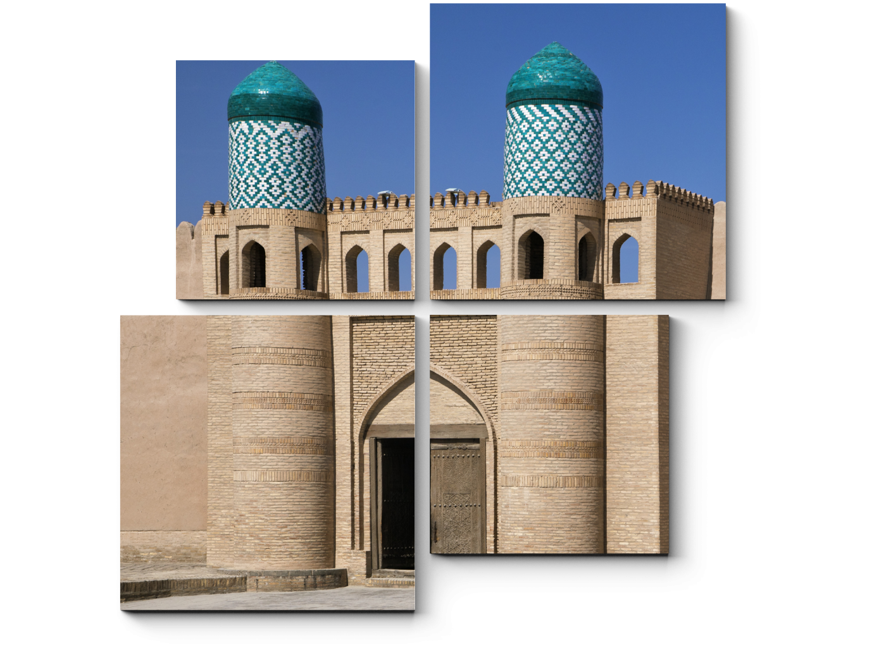

Bir necha asrlar mobaynida bunyod etilgan tarixiy obidalar, me’morchilik va shaharsozlikda yaratilgan
milliy an’analar unutilib yuborildi. Buning natijasida qanchadan - qancha tarixiy shaharlarning
paxsadevor qal’alari, qo‘rg‘onlari va inshootlari yo‘q qilib yuborildi. Birgina Xiva shahri misolida
olinadigan bo‘lsa, Deshon Qal’a paxsa devorlarining 70 %i, Urganch tumanidagi “Ulli Hovli”ining 30%i,
Shovot tumanidagi Qalajiq qal’ani 70%i, Xazarasp tumanidagi Xazarasp qal’asini 50%i yemirilib yo‘qolgan.
Ma’lumki, paxsadevorning “dushmani” atmosfera suvlari hisoblanadi. Xorazm vohasida yer osti suvlari
sathi yuqoriligi sharoitni yanada murakkablashtiradi. Yer osti suvlarining kapilyarlar orqali
ko‘tarilishi sababli yer osti suvlarining tuzlanish darajasining yuqoriligi me’moriy obidalarning
konstruksiyalariga bo‘lgan agressiv ta’sirini yanada kuchaytiradi.
